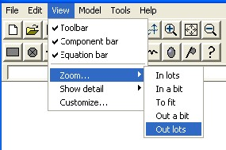

Zooming in and out
You can zoom in and out of a model diagram. Zooming in makes the symbols bigger but shows less of a large diagram. Zooming out shows more of the diagram but makes the symbols smaller.
There are two methods for zooming:
- using the Zoom... item in the View menu
- using the Zoom buttons on the toolbar
Zooming using the “Zoom...” item in the View menu

|
In lots |
2x scaling: symbols are doubled in (linear) size. |
|
In a bit |
approx. 1.4x scaling: symbols are slightly bigger |
|
To fit |
automatic re-sizing of diagram to fit the window. Note that this is according to the least constraining dimension, so you may not actually see your whole diagram in the window. Thus, if you have a diagram which is very wide, but not tall, then it will be “zoomed to fit” vertically, and you will have to scroll left and right to see the rest of the diagram. |
|
Out a bit |
approx 0.7x scaling: symbols are slightly smaller |
|
Out lots |
0.5x scaling: symbols are halved in (linear) size |
Zooming using the Zoom buttons on the toolbar
 has the same effect as “Zoom...in a bit”
item in the View menu: it scales by approx. 1.4x, making the symbols
larger and showing less of the diagram.
has the same effect as “Zoom...in a bit”
item in the View menu: it scales by approx. 1.4x, making the symbols
larger and showing less of the diagram.
- has the same effect as the “Zoom...to fit” item in the View menu: see above for a detailed description of its behaviour.
- has the same effect as the “Zoom...out a bit” item in the View menu: it scales by approx. 0.7x, making the symbols smaller and showing more of the diagram.
In: Contents >> Working with model diagrams